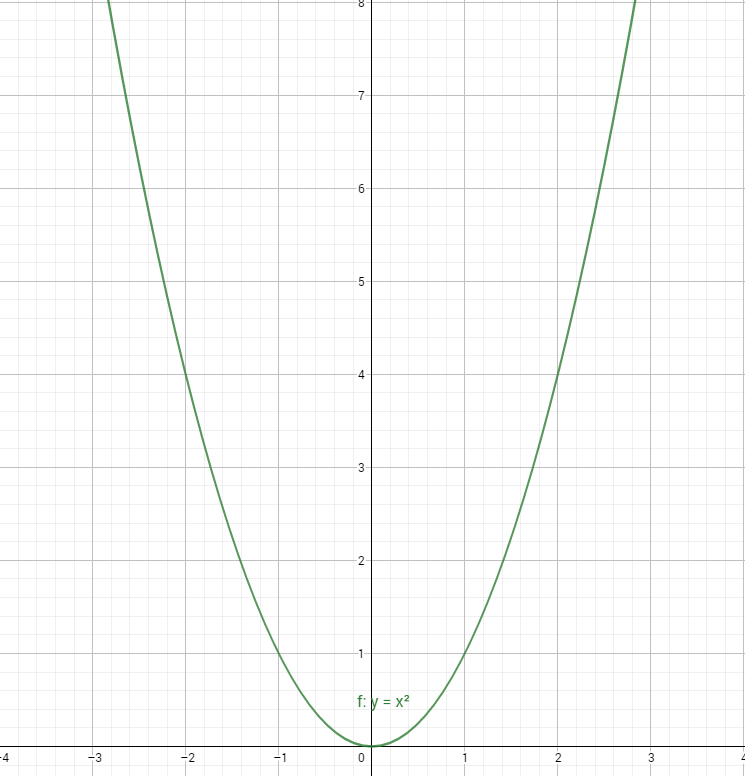

Funcion Cuadrática
La función cuadrática es otra de las funciones "clásicas".
En este caso, es una función polinómica de grado 2, de forma:
\(ax^2 + bx + c=0\)
Voy a dar por sentado por el momento que el lector posee conocimientos de teoría de conjuntos como así tambien de la inyectividad, biyectividad o sobreyectividad de las funciones que analizaremos
Para comenzar, podemos definirla de la siguiente manera:
\(f:\Re\Rightarrow\Re/f(x)=ax^2 + bx + c\)Dividamos las aguas: Por un lado tenemos el coeficiente principal \(ax^2\), el coeficiente lineal \(bx\) y el término independiente que es siempre una constante "c". Para que exista función cuadrática debemos tener siempre el término cuadrático.
Analicemos la siguiente función:
\(f:\Re\Rightarrow\Re/f(x)=x^2\)
El primer paso de la resolución de esta función es hallar la abscisa del vértice, es decir, \(x_v\), para lo cual utilizaremos:
\(x_v=-\frac{b}{2a}\)
Posteriormente debemos obtener la ordenada del vertice, para lo cual reemplazamos el valor que nos dió \(x_v\) en nuestra función.
En nuestro ejemplo tenemos:
\(x_v=-\frac{b}{2a}\)
\(x_v=-\frac{0}{2.1}=0\)
Por lo tanto nuestro \(y_v\) será también 0, puesto que \(f(x_v)=(x_v)^2\) es decir, \(0^2=0\)
El último punto por el momento es hallar nuestro eje de simetría, que se obtine de la misma forma que \(x_v\), es decir que en nuestro ejemplo también es 0.
Por último, nos queda obtener los ceros o raices de la función, para lo cual utilizaremos la fórmula resolvente:
\(x = {-b \pm \sqrt{b^2-4ac} \over 2a}.\)
En nuestro ejemplo, no existen raices \(\Re\)
Finalmente, nuestra gráfica sería algo así:
